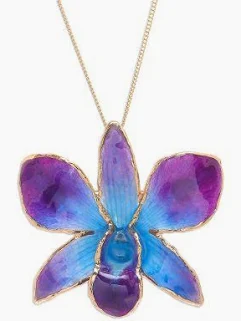
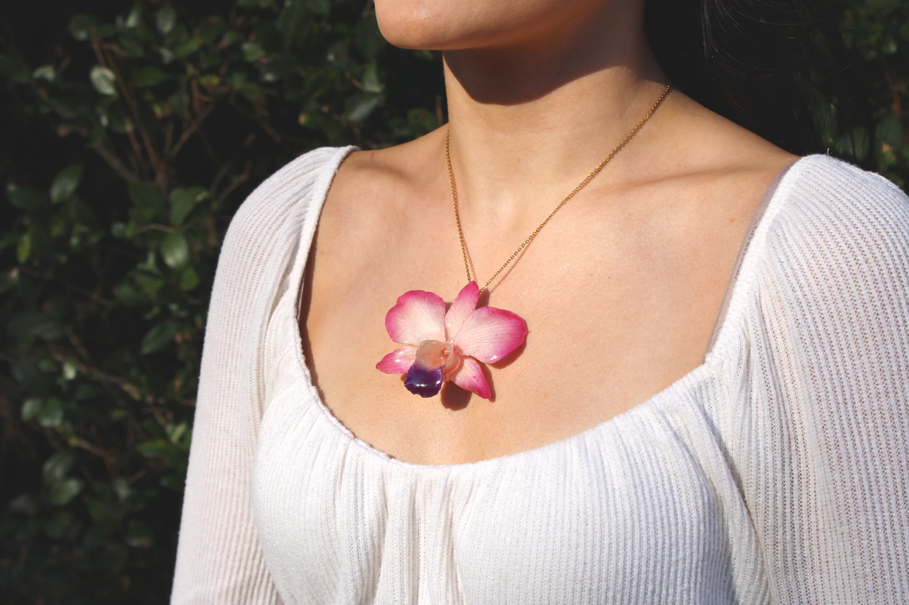
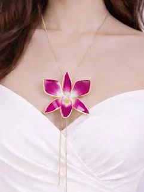

Tierra y Tinta
Slow crafted in Miami, Florida
Custom art jewelry made from real orchids — earrings and necklaces crafted by hand with care.
Our Orchid Jewelry
Real orchids, preserved by hand



Each piece is made from real orchids, preserved and transformed into wearable art. We keep our inventory small so every order receives the same attention to detail.